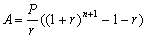

零存整付計算
程式新版編寫日期:2006年8月23日
程式可以計算零存整付問題，假定利息每月計算及息率固定不變，程式可以計算以下問題:
˙本利和 (已知每月存款，年利率及存款期數)
˙每月存款 (已知本利和，年利率及存款期數)
˙年利率 (已知本利和，每月存款及存款期數) (只適用於第二個程式)
˙存款期數 (已知本利和，每月存款及年利率)
參考公式:

(A為本利和，P為每月存款及 r 為每月利率 (即年利率÷12))
第一個程式 (73 bytes)
Mem clear: 1200→X: ?→A: ?→B: ?→C: ?→D:
1 + C÷X→Y: D=0 => log (AC÷XBY + 1) ÷ logY◢
XYC-1(Y^D - 1→Y: B => BY◢ A ÷ Y
註: 計算零存整付問題的年利率需要使用近以值求根的方法，由於超出會考課程的範圍，所以第一個程式省略了這個功能，若果需要計算年利率，請使用第二個程式。
注意: 10x是按shift log。
第二個程式 (143 bytes)
Mem clear: 1200→X: ?→A: ?→B: ?→C: ?→D:
1 + C÷X→Y: D=0 => log (AC÷XBY + 1) ÷ logY◢
C => XYC-1(Y^D - 1→Y: A=0 => BY◢ C => A ÷ Y◢
4M+: Lbl 0: M→Y: 1 + M ÷ X:
( Ans XB (Ans^D - 1) - AM) ÷ ( B(1 + D)Ans^D - A - BM-:
(Y-M)2 ≧ 10x - 6 => Goto 0: M
例題1: 每月存款3000元，年利率為4%，預計存款24個月，求本利和。
按 Prog 1 再按 EXE (不輸入數值代表計算本利和)
3000 EXE (每月存款)
4 EXE (年利率)24 EXE (存款期數，顯示本利和為 $75078.09)
計算完結按 AC 終止程式
例題2: 已知本利和為$75078.09，年利率為4%，存款期為24月，求每月存款。
按 Prog 1 再按 75078.09 EXE (本利和)
EXE (不輸入數值代表計算每月存款)
4 EXE (年利率)
24 EXE (存款期數，顯示每存款為 $3000)
計算完結按 AC 終止程式
例題3: 已知本利和為$75078.09，每月存款3000元，年利率為4%，求存款期數。
按 Prog 1 再按 75078.09 EXE (本利和)
3000 EXE (每月存款)
4 EXE (年利率)
EXE (不輸入數值代表計算存款期數，顯示存款期數為24月)
計算完結按 AC 終止程式
例題4: 已知本利和為$75078.09，每月存款3000元，存款期為24月，求年利率。
注意: 只適用於第二個程式
按 Prog 1 再按 75078.09 EXE (本利和)
3000 EXE (每月存款)
EXE (不輸入數值代表計算年利率)
24 EXE (存款期數，顯示年利率為 4%)
註: 計算利率時，由於需要重複計算，所以計算時間可能會較長。